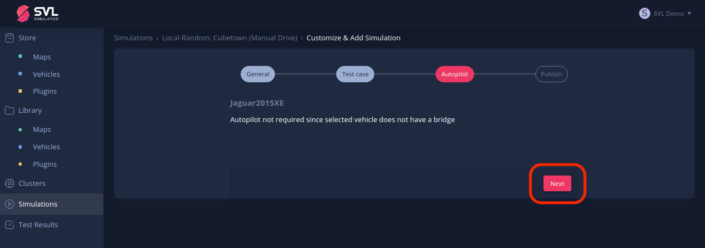

SVL Simulator: An Autonomous Vehicle Simulator


Table of Contents
Introduction top#
LG Electronics America R&D Center has developed a Unity-based multi-robot simulator for autonomous vehicle developers.
We provide an out-of-the-box solution which can meet the needs of developers wishing to focus on testing their autonomous vehicle algorithms.
The SVL Simulator provides integration with the open source AD system platforms Apollo, developed by Baidu and Autoware.AI and Autoware.Auto developed by the Autoware Foundation.

Getting Started top#
Downloading and starting simulator top#
To get started with the simulator we suggest using the release binaries, then:
-
Review the System Requirements.
-
Follow our Installing the SVL Simulator guide to download, install, and start the simulator.
-
You should now have registered for an account, received the "Complete registration" email, clicked the "Verify email" link, and entered a name for your local machine (cluster).
Running the simulator top#
At this point you're probably eager to see SVL Simulator in action. You can check out the various maps, vehicles, and plugins available in the Store, and can of course create your own Simulations, but for now we will get started with a pre-configured simulation:
-
Click on "Simulations" on the left side, and then click "Available from Others" in the middle of the page. This will display a list of pre-configured simulations that are available.

-
Locate the Simulation titled "Local-Random: CubeTown (Manual Drive)". You can scroll down through the list of available simulations until you find it, or you can type "Manual" into the "Search" field to more quickly find it. Once you locate it, click the red "+" icon to add this simulation to your account and customize the simulation settings.
 simulation")
-
Most of the settings for this simulation are pre-configured but you will need to specify where to run this simulation. In the General settings, click the "Select Cluster" field to select the local cluster you created earlier when you linked your local simulator to your cloud account. Then click "Next" to review the "Test case" settings.

-
In the "Test case" settings, click the "Select Sensor Configuration" field and then select "Keyboard Control" from the list that appears. Then (scroll down if necessary and) click "Next" to review the "Autopilot" settings.

-
In the "Autopilot" settings, there is nothing to set since we are going to use keyboard control to control the vehicle. Click "Next" to display the "Publish" view.

-
In the "Publish" view, click "Publish" to publish (save) this simulation to your library. Note that your simulations are private and visible only to you unless you explicitly decide to share it with others.
 this simulation")
-
You can now run your simulation. Make sure the local simulator (cluster) you specified for the simulation is online, then click "Run Simulation" and switch back to the SVL Simulator window.
 this simulation")
-
If this is the first time running a new simulation, the simulator will download all required assets such as the map, the vehicle, and any specified plugins. These downloaded assets will be locally cached for future (or offline) use, after which you should see (in the SVL Simulator window) a red ego vehicle on the CubeTown map. Press the triangular play/pause button button (on the left side of the simulator menu which you'll find at the bottom edge of the simulator window) to start (un-pause) the simulation.
 this simulation")
-
Explore the simulator and then check out the following section for more helpful information on controlling the simulator:
- Drive the ego vehicle by pressing the up-arrow key to accelerate forward, left and right arrows to steer, and down-arrow to brake.
- Press "F12" to reset the ego vehicle to the default position.
- Press "N" to toggle NPC vehicles off and on, or "P" to toggle pedestrians.
- Check out the different camera modes.
- Use the right mouse button (click, hold, and drag) to look and rotate the camera view around the scene.
-
When finished, return to your browser window and click "Stop Simulation" in the online user interface to end the simulation.
Guide to simulator functionality top#
- Look through the simulation menu to learn about the various on-screen options for controlling the simulator.
- Discover other keyboard shortcuts for manually controlling the ego vehicle and the entire simulation.
- Change the weather by adding rain or clouds or adjust the time of day using the interactive menu.
- Explore the various sensor visualizer and bridge connection options available in the simulator (available when using a vehicle which is configured with sensors and a bridge).
- Learn about options available on the simulator main screen including the Visual Scenario Editor in online mode and how to run offline simulations in offline mode.
Next Steps top#
Autonomous software tutorials top#
SVL Simulator supports several open source autonomous software platforms (as well as proprietary ones through the use of custom bridge plug-ins). Check out the following tutorials to learn how to use Apollo or Autoware with SVL Simulator:
- Use Apollo (Latest) with SVL Simulator.
- Use Apollo 5.0 with SVL Simulator.
- Use Autoware.AI with SVL Simulator.
- Use Autoware.Auto with SVL Simulator.
Note: To run a simulation with Apollo or Autoware you will need to either create a new simulation or add a pre-configured one.
To create and configure a new simulation, check out the detailed walk-through instructions in Running SVL Simulator.
To customize and add a pre-configured simulation, return to "Simulations: Available from Others" in the online user interface (review Step 1, above) and search for "Apollo" or "Autoware" or "Local-Random". To customize one of these pre-configured simulations, refer to the Simulations documentation.
Python API top#
Learn how to control and script simulations at runtime using the Python API.
Note: Check out the pre-configured "API Only" simulation for use with Python API mode.
Building and running from source top#
Building the simulator from source is only recommended for developers who wish to customize the simulator, build plugins, or make new assets.
Check out our build instructions to build the simulator from source.
Contact top#
Please feel free to provide feedback or ask questions by creating a Github issue. For inquiries about collaboration, get in touch at contact@svlsimulator.com.
Citation top#
For citation please use the following:
@ARTICLE{2020arXiv200503778R,
author = {{Rong}, Guodong and {Shin}, Byung Hyun and {Tabatabaee}, Hadi and
{Lu}, Qiang and {Lemke}, Steve and
{Mo{\v{z}}eiko}, M{\={a}}rti{\c{n}}{\v{s}} and {Boise}, Eric and
{Uhm}, Geehoon and {Gerow}, Mark and {Mehta}, Shalin and
{Agafonov}, Eugene and {Kim}, Tae Hyung and {Sterner}, Eric and
{Ushiroda}, Keunhae and {Reyes}, Michael and {Zelenkovsky}, Dmitry and
{Kim}, Seonman},
title = "{SVL Simulator: A High Fidelity Simulator for Autonomous Driving}",
journal = {arXiv e-prints},
keywords = {Computer Science - Robotics, Computer Science - Machine Learning, Electrical Engineering and Systems Science - Systems and Control},
year = 2020,
month = may,
eid = {arXiv:2005.03778},
pages = {arXiv:2005.03778},
archivePrefix = {arXiv},
eprint = {2005.03778},
primaryClass = {cs.RO}
}